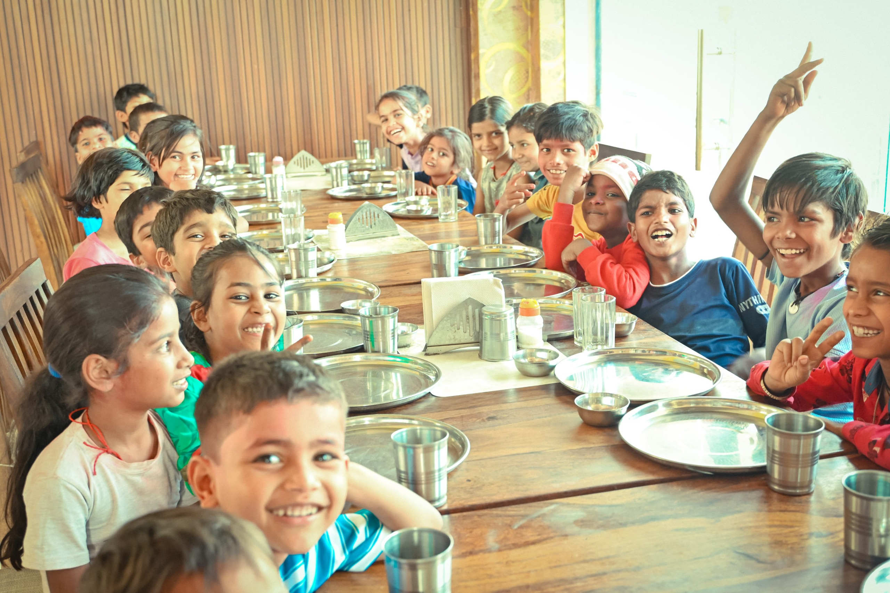

Learn about our mission, vision, and the dedicated team working to transform children's lives.
To provide quality education, healthcare, nutrition, and protection to every underprivileged child, empowering them to break the cycle of poverty and build a dignified life.
A world where every child, regardless of their background, has access to education, healthcare, and opportunities to reach their full potential and dream without limits.
Compassion, transparency, integrity, inclusivity, and accountability guide everything we do. We believe in community-driven development and child-centered approaches.

Years
Hope 4 Kids Care Foundation was born from a simple yet powerful belief — that every child deserves a chance at life. What started as a small group of volunteers distributing food and books to children in slum areas has now grown into a full-fledged organization impacting thousands of lives.
Our journey began when our founders witnessed the harsh realities faced by children in underserved communities — children who couldn't go to school, who slept hungry, who had no access to basic healthcare. This sparked a fire that led to the creation of Hope 4 Kids Care Foundation.
Today, we operate across multiple districts, running programs in education, healthcare, nutrition, child protection, and skill development. We work hand-in-hand with communities, schools, and government bodies to create lasting change.
Hope 4 Kids Care Foundation was officially registered. Started with food distribution drives during COVID-19.
Launched our first education sponsorship program, sending 200 children to school with full support.
Conducted first series of free medical camps, benefiting 2000+ children across 5 districts.
Received NITI Aayog Darpan registration and expanded to 10 districts with 50+ programs.
Milestone of impacting 5000+ children through education, healthcare, and nutrition programs.
Launched digital learning centers, skill development programs, and expanded to 15+ districts.
A passionate team of professionals and volunteers dedicated to changing children's lives.
Managing Director
Leading the foundation's vision and strategy to create lasting impact for children across India.
Operations Head
Overseeing all programs and ensuring efficient delivery of education, healthcare, and nutrition services.
Education Programs
Designing and implementing innovative education programs for underprivileged children.
Volunteer Coordination
Managing volunteer programs and building strong community partnerships for sustained impact.
Children Impacted
Schools Supported
Dedicated Volunteers
Districts Covered